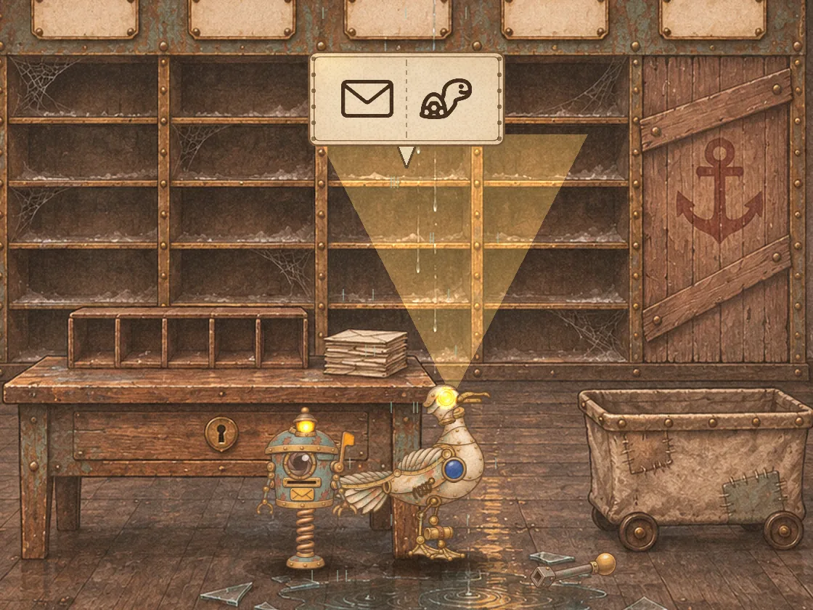
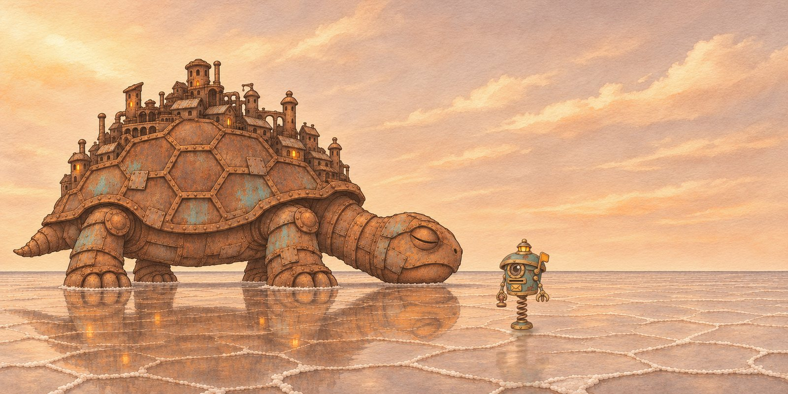
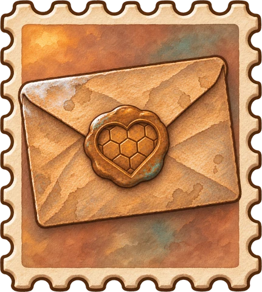
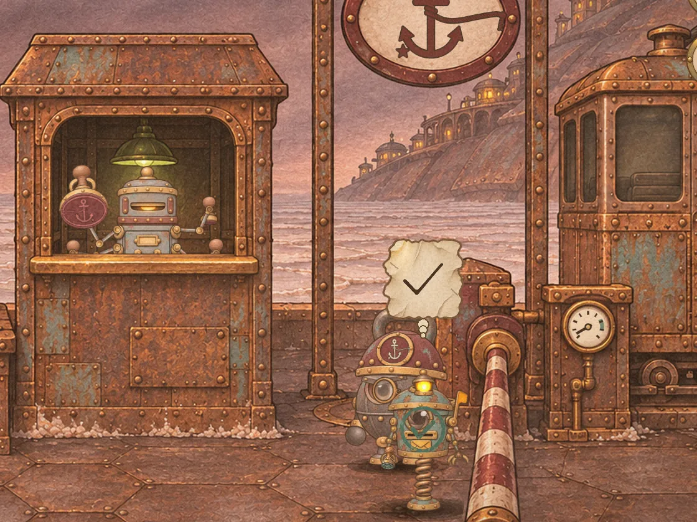
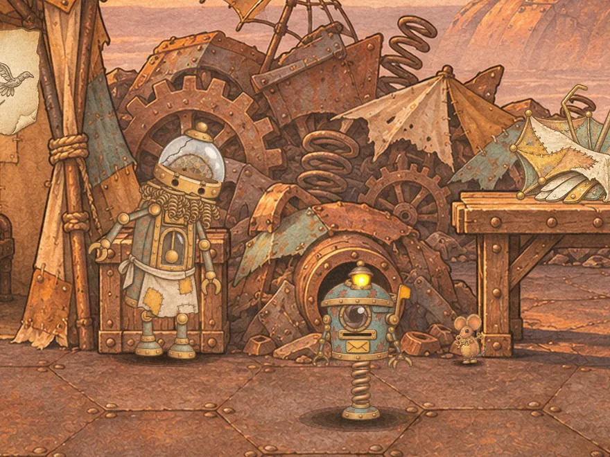
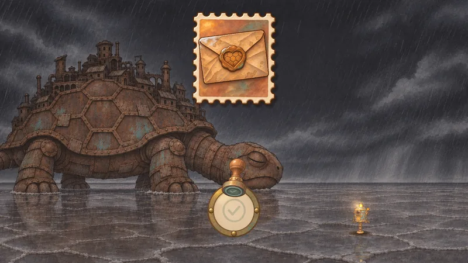
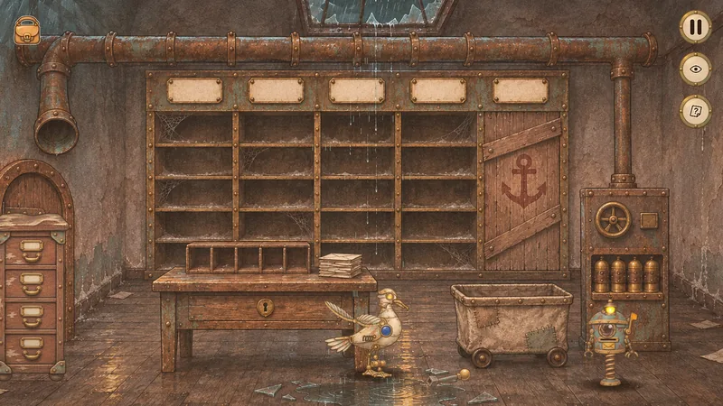
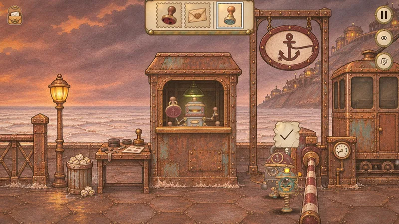

01
Ni una palabra
La historia se cuenta con dibujos, gestos y sonido. Los personajes piden lo que quieren con burbujas de pictogramas, y Tilo piensa en dibujos.

Una aventura gráfica sin palabras
Un buzón. Una última carta. Una tortuga gigante que lleva una ciudad a cuestas.

Una carta cae en la ranura de un buzón olvidado. Va dirigida a la tortuga gigante que lleva una ciudad a cuestas.
Eres Tilo, un buzón-autómata que anda a saltitos y no ha olvidado su deber. Caparazón, la ciudad oxidada que vive sobre el lomo de la Tortuga, lleva años parada: el Gremio del Lastre cerró Correos, fundió los sellos y clavó anclas para que nada se moviera.
Alguien tiene que entregar la última carta. Y solo queda Tilo.
Recorre los muelles, los mercados y los tejados de una ciudad mecánica, y baja hasta donde no llega la luz.
Una aventura gráfica de mirar, tocar y pensar. Recoges, combinas, ayudas a los robots y criaturas que te cruzas y resuelves puzles mecánicos de cerca.

La historia se cuenta con dibujos, gestos y sonido. Los personajes piden lo que quieren con burbujas de pictogramas, y Tilo piensa en dibujos.


Recibido, Urgente, Frágil… Cada sello es una idea que el mundo entiende: estampa Urgente en una etiqueta y la cola se aparta.

Chispa, una ratona de cobre con fama de ladrona, se hace tu compañera y se cuela donde Tilo no cabe.

Algunos problemas tienen tres salidas buenas. Lo que eliges queda en tu hoja de ruta y decide cuál de los tres finales verás.





Sin anuncios y sin compras dentro del juego. Se juega sin conexión.